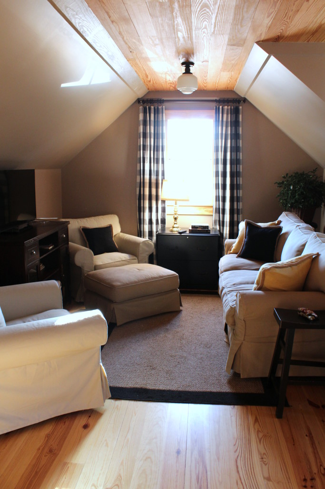

.png)
.PNG)
.PNG)
.PNG)
.PNG)
.PNG)
.JPG)
.JPG)
.PNG)
.PNG)


Secondly, I wanted to let you know that we have been working tirelessly on the room over the garage. When school started back last August, we stopped our progress on it. Then when the boys moved to Seattle, they took all the furniture that was in there. So the room sat empty and neglected for months. But around January, I decided to purchase some pieces for the room….the chairs (from Ikea) and the media cabinet (from World Market.)
We also purchased a desk (after all this IS supposed to be my husband’s office. 🙂 )
 My husband had finished the cabinet that has the coffee bar set up on it months ago. And he had already finished the cabinets and shelves in the kitchen then as well. I finally got the drapes made and hung last weekend. (Our son liked it better up there without the drapes because it was “less finished” looking before. Boys!)
My husband had finished the cabinet that has the coffee bar set up on it months ago. And he had already finished the cabinets and shelves in the kitchen then as well. I finally got the drapes made and hung last weekend. (Our son liked it better up there without the drapes because it was “less finished” looking before. Boys!)
While we are catching up, let me tell you about the sofa up there.
(and you are going to be totally convinced that I am crazy!)
A week or so ago, my husband and son went to Ikea and bought a sofa. They brought it home, put it together, and put it up in that room. Well…..I knew I really wanted a sleeper sofa up there, and the Ikea one, was not one – but the one in the playroom was.
So….
My husband took the metal mattress frame and mattress out of the sleeper sofa. Then he and our son tried to move it up there. But it would not make the turn at the top of the stairs. They tried turning it every way they could. No luck. So he took a panel off the wall hoping he could swing it into the space there and make the turn. It still wouldn’t turn the corner. Unhappily, it went back down to the playroom. 🙁
When the frame was sitting sadly in the playroom, I sat there and studied it for awhile. This particular sofa has a slipcover over its ugly blue plaid upholstery. Finally I said to my husband, “You know, if you were to cut the board on the front of it, and remove that board, it could make that turn and go into the room. Then you could put it back together. I could throw the slipcover back on it, and you would never know it had been cut.”
My husband just rolled his eyes and shook his head.
But then, he studied it for awhile, and said, “Okay.”
So last Monday he cut off the front. He moved it upstairs. It made the turn and went into the room. (Hallelujah!) He reassembled it, and I threw the slipcover over it all when he was finished. And voila..we now have a sleeper sofa in that room, and a new sofa in the playroom. And all is right with the world. 🙂
(If we ever sell the house, the sleeper sofa will have to stay with it. It will never be able to come out of that room!)
You can see that the room is not totally finished. I still have a large assortment of framed photos to hang on the walls. I want to get a new lamp for the table under the window. I need to purchase a table for eating on up there and some snacks for the jars. And then I will be able to say the room is finished. 🙂
(It has come a long way from this though.)
And while we are catching up, let me tell you that I turned in all my paperwork for retirement last Friday the 13th. 🙂 Here is the true sign that it is time…. The young lady who works in the department that handles paperwork and helped me is a former student of mine that I taught in first grade. Yes, it is time. 🙂
The last thing I want to catch up on with you is blog comments. There were over 200 emails from comments, and site contacts, and other various things in my inbox this weekend. They had really piled up with everything that was going on here (like working on the office!) You all know I believe conversation is important, and I truly want to reply to everyone. So I spent a few nights this week catching up on all of them, but I did not email all the replies to you like I normally do. The replies are on the post. So if you have left a comment on any post this month, more than likely you will find that I have replied to you in the comment section. Just look back at the posts to see. After I retire in May, I should have time to return to emailing replies to you. Hope that is alright. I need a clone!!
 (old photo)
(old photo)
Stay warm!


.PNG)
Beautiful office, funny sofa story and great retirement news!
But what I want to talk about are comments. You are always so sweet to send the comment by email, and I’m a miserable, low-life blogger who leaves the comments on my blog. I think if people check the “notify me” option it will automatically send them my reply, but I’m not even sure about that!
Oh – what to do? I’ve tried three other comment plug-ins and nothing automatically sends them. It stresses me out that people may think I don’t care, and I’m so lame, I have nowhere NEAR 200 comments to think about.
If you ever want to skip my email, go right ahead. I know you adore every word I write. Hahahaha!
——————————————————————-
Yes, I do adore every word you write, Leslie Anne! 🙂 Comments….no, you are most certainly NOT a miserable low-life blogger. (Cause if you are, then I am one now as well with just replying on the post.) I have never used a plug in. I have always answered them on the post in my comment section of the dashboard, and then I copy and paste and send an email…two steps. A plug in would be great. Let me know if you find one that works well please!
Kelly
The room looks wonderful! your husband did an awesome job on that “coffee Bar” I like the story about the sofa-so funny. Congratulations on your retirement!
p.s. one of my favorite shots is the unfinished room with that beautiful bolt of fabric!:::swoon::: I would LOVE to be able to sew like you.
———————————————————————
Thank you Rowe. I thought my husband did a great job too. 🙂 I don’t think the sofa story was funny to him at the time, but it is funny now. I agree with you about that fabric…love it! Sewing is a much needed skill for those of us who like to redecorate often.
Kelly
I can just see your husband’s face when you solved the sofa problem. I had to chuckle! Sometimes it takes two heads to solve a problem. Retirement? I hope you re-generate that talent and energy into something you love to do. I look forward to hearing about your new adventures and journeys.
Take care. They are going to miss you at the school!
Emily
——————————————————————–
Oh yes, he wasn’t too thrilled with that idea. I hope to have many new adventures in my retirement to share with all of you. Can’t wait!
Kelly
Congratulations on your retirement!! Looking forward to more blogging!
———————————————————————
Thank you Martha. I am definitely looking forward to it as well. 🙂
Kelly
Congratulations Kelly retirement is awesome. I retired in October but have been at my son’s home helping renovate it.
Nearly there my son is moving in this weekend it’s not quiet finished but the house has been unoccupied for too long. Now it’s getting it final finishes it’s time he was living there. So a new beginning for us a we will be empty nesters I’m so looking forward to it. So much I want to do.
Kind Regards
Karen
———————————————————————-
I know your son will enjoy his newly renovated house! That is great! I don’t think we will ever be empty nesters…our children keep periodically keep returning home. 🙂 Good luck as you begin this new phase in your life.
Kelly
Wow, you have really been so busy! Your room above the garage is great. Ok, most men love a challenge, I was giggling though with all your brainstorming. Just like a teacher! Way to go Kelly! So, here I go…more envy, as our room above the garage is full of some extra furniture pieces and a lot of storage boxes. We built in the late 80’s and had planned to someday expand living space. I still contemplate my ideas how many years later….ugh! The space allows a small loft area too. I assume you maybe have a separate furnace and if so, did you do electric? Curious. So this is hubby’s office.. “Man Cave”? I bet your son and daughter think it’s pretty sweet too. Are girls allowed? 🙂 Congrats on your decision to retire. Can’t wait to see how you “amp” up your blog, though I feel it is lovely as it is.
————————————————————————-
Never a dull moment around here! It sounds like you have a lot of room in your bonus room. If you don’t like the furniture in it, have a yard sale and then shop Ikea. I have been very pleased with our upholstered pieces from there. As far as our heating and cooling of the space, we just have an electric AC/heating window unit (not efficient I know.) Yes, it is husband’s office combo guest suite. 🙂 Our middle child is loving the space and has temporarily claimed it as “his” until he leaves for a job in Atlanta (and then on to law school in the fall.) Daughter has not seen it finished, but she is such a scaredy cat she would not really care for the space away from the rest of the family. Thanks for the congrats on my retirement. I am counting down the days. 🙂
Kelly
Your room looks wonderful!
I retired a couple of years ago from Social Work. I remember several people retiring right before me, and then they would come back and work part time under a program that would not interfere with their retirement. I thought what the heck is wrong with them? GO ENJOY a well deserved time! I have never looked back or even THOUGHT of returning. I am loving being retired!
Looking forward to all the fun blogs you will do on your time off!
Best wishes for lots of fun!
——————————————————————–
Thank you Mary. I can’t imagine going back to substitute teach. There is just too much to do that I have not had the time to do all these years. I am with you on not looking back. I am looking forward to retirement. 🙂
Kelly
Oh, Kelly what a great time in your life. New chapter. It. does take adjustment. June will feel like you are just off for summer’ but when school begins YOU Will know it is for real. Don‘t allow others to fill your new found time. Happy for you!!!
———————————————————————
I will take your advice Nan. I think I will believe I am retired on the day when all the teachers go back for preplanning and I don’t have to go to our big county wide meeting. 🙂
Kelly
Hi Kelly,
I like what you’re doing with the office. Where did you get your coffee mug tree and how do you like it? I’ve been thinking of purchasing one like that.
Thanks and congratulations on your retirement,
Dawn
———————————————————————–
Thank you Dawn. The coffee mug tree is a bottle drying rack from World Market,and it was only $15, so I love it! Works as well as the huge ones from other stores that cost 5 times the price. Hope you can find one like it.
Kelly
Great news about the retirement. I retired last July after 35 years with a Fortune 500 company. I haven’t had a boring day yet. You’re going to love it. Best of all you’ll realize that Maggy Smith’s character in Downtown Abbey nailed it when she asked “What is a weekend?” Every day is a weekend when you don’t have to work for other people. The best feeling ever.
———————————————————————
Loved that comment – “What is a weekend?” And I can’t wait until I am on endless weekend! Thank you for your comment Nikki.
Kelly
Kelly, the room is so beautiful…love the built-ins. It looks great now..can’t imagine how wonderful it will be when you are finished. Congrats on your pending retirement!!
How exciting!!
———————————————————————
I thought my husband did a very good job with those cabinets. Glad you liked them Shirley! And thank you for the congratulations on my retirement.
Kelly
Dear Kelly,
Congratulations!! There comes a time when you know it is the “right” time to retire. Sounds like you have found that magic year. I am in my fourth year of retirement, as busy as before, but in a different way. You will miss the children and the love they shower you with, but you will no longer be grading papers and preparing every night and weekend. You will have some “you” time. I love reading your blog- knowing that it is written by a fellow teacher – that it will be fun, well thought out, creative, and do-able.
Lonna
————————————————————————
Lonna you are too sweet! Thank for your sweet, from-the-heart words here. I am looking forward to my retirement!
Kelly
Kelly,
I love a catching up/musings post. The office area you have created is beautiful.
You are going to love being retired. School is good but you will love your time away from it too. Did I just read someplace that it took your husband 10 years to decide to marry. You are a patient girl.
As always, this is a fabulous post.
DiAnne
—————————————————————————-
I am happy you like the room, DiAnne. Yes, it took my husband 10 looooong years to decide to marry me!
Kelly
Oh Kelly, the room is looking so wonderful! What a funny story about the couch, that will be an interesting conversation come selling day… haha. The kitchen area is amazing, so classic and just perfect. You’ve increased my love for buffalo plaid more than I already do (and that’s saying something!)
————————————————————————
Thank you Hilary. Glad you liked all the details of the room. I know just what you mean about the buffalo check!
Kelly
RETIREMENT! Yeah! Wonderful! You are going to love it. In June it will be 5 years since I retired from our school system and I never looked back. Just feel blessed that I could and you will feel the same way too. Love the office, of course you would cut a sofa apart to move it. Heehee.
Cindy
———————————————————————-
I think I am going to love it too, Cindy. Glad you loved the office! I really never thought I would cut a sofa apart. We were just lucky that it had a slipcover to cover our crime!
Kelly
First off, your Valentine”s breakfast looks Absolutely scrumptious! Secondly, your husband’s office is fabulous and I plan on copying some of your ideas when we put up a garage this summer! Thirdly, Your husband has got to be an angel to go through everything he had to do to get your sleeper sofa upstairs! He definitely is a keeper!!! And lastly, I did receive an Email from you regarding comments I had left on some of your posts. Please know that I do not expect you to send a comment back- You are such a busy lady (I don’t know how you manage to do all that you do) Consider my occasional comments a THANK YOU for the pleasure and enjoyment your posts give me! Oh, I guess I also wanted to congratulate you on your upcoming retirement! You are going to love it!!!!
——————————————————————–
You are very sweet Barbara. You go right ahead and copy anything you like for your new garage. My husband is definitely a keeper AND an angel. 🙂
Kelly
Exciting news!! Congrats on your retirement. I’m thrilled for you and for us since this must mean more time on your blog! The couch story was great and you had me laughing. Bless your husband! The room is beautiful. Love the kitchen… Perfect for guests. You guys did an amazing job. Have a great weekend!
——————————————————————–
Thank you for all your kind words Patty. Yes, bless my husband. He has such a crazy wife to put up with!
Kelly
Kelly!
Retirement?! Really?! Wow! You go girl! I am so super excited for you! Congratulations! I love the way the office has turned out so far and the whole sofa/sleeper sofa thing sounds exactly like something I would do. Our husbands must be saints! Speaking of husbands mine and I just got back from Riveria Maya, Mexico and the weather here in Missouri is a shocker! However, now we are going to paint the daughters game room downstairs Cozumel teal! I am a paint color changer! Our kitchen has been burnt orange, blue and grey in the past 4 years. I am thinking of going green next though. Thanks for sharing your photos of the office and your story. Take care!
———————————————————————
You are so not afraid of color are you Dawn?!! I bet your daughter will love the game room in a teal. (Mine would!) Thank you for the congratulations on my upcoming retirement and the compliments on our office. I know your trip had to be wonderful!
Kelly
Kelly,
That story on the sleeper sofa logistics reminded me of the sleeper sofa we put in our study at one point. We nearly couldn’t get it out of the room, even though we didn’t have memories of it being difficult to get into the room! The space you have above the garage is great…like a little apartment. By the way, Mr. B. worked up in the bay area for a time and kept an apartment up there…we furnished it with a lot of Ikea and those chairs were his favorite and he still says he’d like a pair for our family room! 🙂
May will be here before you know it, what a fun new journey you’re about to embark on.
xo,
Karen
—————————————————————–
Oh dear…how strange that the sofa was difficult to get out! I wonder if your door was removed when you moved it in? It is like a little apartment up there, and the chairs are great for us. Yes, May will be here soon, and I will be finished in 12 weeks. (counting down!)
Kelly
Woot woot! Retirement! My husband retired from teaching after 39 years a year and a half ago – 29 years in public school, 10 in private. All I can say is teachers work REALLY hard and doing it for 33 years shows your dedication and love for the kids. I’m retired, too (not from teaching), but it came earlier than planned due to the great recession. Anyway, life is grand, and we’re really enjoying our retirement since we moved full time to our cabin in the N.C. mountains. Yes, it’s cold now, 0 degrees on the porch this morning, minus 8 yesterday, not counting the windchill which was brutal, and we’re still iced in since Monday’s storm. But we planned ahead and have nowhere we need to be, so think we’ll make it to the weekend when the temps are supposed to get over freezing, though they’re calling for more snow tonight. Nothing like they’re experiencing up north and in the upper midwest, though. This is still the south, and we can always count on it warming back up.
Your room over the garage is looking great. What kind of wood planks did you use on the ceiling? And I love your story about the sleeper sofa. Those things are heavy!!
I know you will have a very active retirement, and look forward to seeing and hearing about all your ventures. I don’t know how you have enough time to devote to your blog as it is, with all the goodies you share, not to mention your lovely home, even, or I should say especially, when it’s a work in progress. It all takes time. Here’s to enjoying more time.
———————————————————————-
Thank you Carolyn. I am glad you are enjoying your retirement – even if you are experiencing some kind of severe winter weather.
I believe the wood on the ceiling is tongue and groove pine flooring – yes used on the ceiling.
Kelly
I have the exact same problem getting a sofa into our FROG. Right now we have a loveseat in there, but the room is so large it really needs a full-size sofa. I’ve thought about shopping Ikea in hopes that a disassembled sofa might work. I simply don’t want to put a load of money into what is essentially the spousal unit’s man cave. Thoughts? I retired last June from my library position. BEST thing I have ever done for my health (although I miss the people and being around books all day). This is the first winter in years that I haven’t had bronchitis/pneumonia that lasted for months. I miss the paycheck, but you simply can’t put a price on health and happiness.:)
———————————————————————-
I think you might like the Ikea furniture. It is priced very reasonably. I do think my retiring will help my health too. I am looking forward to that!
Kelly
Oh, my goodness! Congratulations!!! I can’t wait to see all that you do as a retired woman.
I love your resourcefulness on getting the sofa up the stairs. Not only are you a teacher, but an engineer too. My brain works the same way, which throws my husband, an actual certified engineer, for a loop. Oh, and yes, that sofa can come out of the room, possibly tossed out a window or cut in half. I love your husband’s office, it looks wonderful & cozy! Thanks for showing your Valentine’s breakfast table. Everything is beautiful as usual. Thank you for the upholsterers information and have a wonderful weekend!
——————————————————————-
Thank you Teresa. I am glad you liked the office and the breakfast!
Kelly
Congratulations! So excited for you! You are gonna love it! Room looks great by the way! Enjoy your weekend! 😉
———————————————————————–
Thank you so much Donnamae! I am excited too. 🙂
Kelly
Your house is my inspiration house, and just when I think it couldn’t POSSIBLY get more perfect or enviable, you present us with your FABULOUS new man-cave/guest suite! Somebody call back the folks from BH&G, because they should just move into the guest suite for a while and “shadow” you through some more of your projects. You and your husband would’ve made wonderful pioneers with your endless reserves of energy and resourcefulness.
You put so much love into teaching and raising your family; as you bring your teaching years to a close and focus your attention on your blog and household matters, there’s NO TELLING what marvels we lucky readers will behold in the future!
Best wishes for a long, happy, healthy retirement from teaching, and for greatest fulfillment in your new full-time career!
———————————————————————–
Wow Ruth! What a super super sweet comment here today! Thank you so very much for all your compliments!!
Kelly
Oh, what news, Congratulations! I know it can be a very difficult decision to bite the bullet and hand in those retirement papers, but when you are ready, you just know. I am selfishly looking forward to what direction you will take this blog. It is like no other and has become such a looked-forward-to read, always. I can’t believe how much time you spend with individually replying to us all each time we comment. Is there even another blogger who does this? I mean you don’t leave things at a simple thanks, you write such thoughtful responses. I know we all appreciate that so much. But, if you need to curtail that as the blog gets bigger, I don’t think any of us faithful followers would mind. You and your husband are just two creative souls and so energetic, loved the sofa saga. (We had to cut a very large window in our last home in order to get a couch into the basement level there. When we sold the house we were able to take the matching chair and ottoman, but had to leave said couch for the new owners!)Enjoy these last few months of teaching, they will go by fast and yet be filled with many good moments.
———————————————————————
Yes, Paula, when you are ready, you do know. I do feel like this is definitely the right time. Thank you for your appreciation of blog comments. It does require so much more work, but it is worth it.
Kelly
Congratulations on your retirement! As someone who loves being home, I’m sure you will love it, too! I’m so happy for you and wish you all the best in this new chapter in your life.
———————————————————————
Thank you for your sweet words Renee. You are so right about loving being home. So retirement should definitely be wonderful!
Kelly
Congratulations on your upcoming retirement, Kelly. You will love it and adjust to it very quickly 🙂 I retired from teaching, after 35 years. The big thing, that I noticed, was that I wasn’t getting sick all the time!
Your husband’s office looks like a wonderful place to relax. Is there any chance that you will be using it? (Ahem.)
——————————————————————–
I am hoping you are right about not catching all of the sickness that seems to run all over an elementary school. That is part of the reason I am retiring. My health has really been hit hard with sickness this year, and I don’t think it is a good idea to keep subjecting myself to all those germs. 🙂
Thank you for the compliment on my husband’s office. Yes, I will be using it a little, but it is chiefly his space.
Kelly
Yay! You are going to love being retired! You will miss it a little but not so much that you would want to go back. I am excited because I think we will get to see more posts from you. You will wonder how you ever did all you did while you were working. (One bit of advice…learn to say no. You are so creative and people will think you have a ton of time and will be asking you to do a million things. I know…not nice!) Your bonus room is fabulous! Be glad you didn’t let your sons talk you into a pool table for it. Getting the pool table to our bonus room was sort of like you getting the sofa into yours. It is there to stay. (unless I chop it up and bring it down in pieces) I love those Ikea chairs, the little kitchen area and the way you decorated it all.
———————————————————————–
Yay is right! The plan is definitely more blog posts. 🙂 And I will listen to your advice. A pool table? I can’t even imagine trying to get one of those things up in that room! Glad you like what we have done on the room so far. There is more that I hope to get done in there soon.
Kelly
Congratulations on your retirement! What wonderful news for you and your family. You have certainly earned it.
Your home is as lovely as always – so very warm and welcoming.
Here’s to fun adventures ahead!
——————————————————————–
Thank you Talia. I am looking forward to those fun adventures ahead!
Kelly
Kelly I retired almost two years and it was the best thing I could ever do. I even talked my husband into it so that when his company came along with a wonderful package, he took it. We have done so many things to our home that we just could never find the time for or the money. I have him almost convinced to sell our home (5 bedrooms) and downsize out of Connecticut and into a warmer and cheaper state. Enjoy your time, you earned it.
——————————————————————-
I can certainly understand your wanting to move to a warmer place after the unreal winter you have had this year! Good luck with downsizing. My son will be at law school in New Haven next year, and he has been shopping for winter clothes since he does not really own any…no need of them in Georgia! I am excited (to say the least!) about retirement. 🙂
Kelly
It IS funny/strange how time flies and your former student was working in the office. My sis and brother-in-law are closing down their appraisal business they’ve had for 36+ years. I remember when they started out as newlyweds and had a tiny office in their moble home. Oh my. But congratulations on your retirement – and thank you for investing in children all these years. Such an important role! Here’s to new adventures 🙂
———————————————————————–
Barbara, seeing my former student there was almost like “another sign” that it is most certainly time to do it. I guess you just know when it is time. Time does fly.
Kelly
Congratulations on making the retirement leap! I did the same 18 months ago after a loooong career in writing and editing. It truly is a fresh start. I love your blog & can’t wait to see where you go with it!
———————————————————————
Well congratulations to you as well, Jan! I know you must be enjoying your retirement now. I am so glad you are spending part of your time reading the blog here. 🙂 Thank you for the congratulations!
Kelly
That office is gorgeous! Your decorating skills are amazing – and it is just my style. So happy for you regarding your retirement. I know, as a fellow teacher, that it is a big decision. A life changing decision. But I am so happy that you will be working even more on your blog! I check your website everyday and I’m always thrilled when there’s a new posting. Congratulations to you on this new path….it is one I know will be rewarding for you and for the fans of your blog.
——————————————————————
Thank you Charlene! I am glad you like the room. And thank you for the congratulations on my retirement! I am really looking forward to it.
Kelly
You will love retirement! Anyone as creative as you are will be busier than ever. I love the office, it looks great. The couch story is so funny. I inherited a couch from my mother that I wanted put in my new playroom ( old bedroom converted for grandchildren)The only way it would fit in the room was through the window and that involved taking out windows, hoisting couch up ,and lots of cussing and fussing…my sons ( who were my movers) told me that when I wanted it out, it was coming out cut in two. Well, you know I didn’t like it in the room and really didn’t care for the couch, so a few years later they cut it in two and moved it out. I felt a little guilty and my mother probably rolled over in her grave, but it had to go.
I enjoy your blog so much and really look forward to seeing how it evolves when you have even more time to devote to it!
——————————————————————-
I actually thought about taking our sofa through the window, but the opening was too small. I can’t believe you didn’t like the sofa after you all went to so much trouble to get it in there!
Kelly
Your blog is one of my very favorites! Love the work you are doing in your husband’s office, but noticed there is no red there yet. Maybe it will appear soon??
Congratulations on your forthcoming retirement. 33 years is a testament that you loved your career.
———————————————————————
No- no red in there. My husband isn’t a big fan of red like I am, so there won’t be red in there. Currently I am using yellow as an accent but may change it to something else before we are finished. Thank you for the congratulations on my retirement.
Kelly
Hi Kelly: Haven’t commented for a while on your blog but have faithfully been following it every time there is a posting. I cannot believe you are retiring this year! You don’t look much older than your pretty daughter. Congratulations on 33years. Your students have been most blessed to have such a creative teacher throughout the years. And we have been blessed as well to have shared in your creative design gifting as well. Thank you for the many great ideas you have shared throughout these last couple of years. So excited to see what you have in store for us next in your new career and to think that we get to be your next group of students:-) Yaay!!!! Love the new room….you and hubby have certainly taken great advantage of every inch of the space. Ingenious! The breakfast looks amazing..so delish! Well, signing off from four below zero Ohio. Burr!!! Keep the coffee coming:-) Blessings…Gail
——————————————————————–
Four below zero…not good! I hope you are warming up there in Ohio. Thank you for being a faithful reader, and I loved what you said about you all being my “next group of students.” How funny!
Kelly
Congrats on retirement!! Kelly you are one of the few bloggers I know who faithfully responds to comments. I think we all understand that as blogs grow it is hard to keep up with each comment so we understand your decision to reply to the comment on the blog. That is what I do as it is just easier. I think your sweet spirit shines through your blog and has made it grow! Loved your story of the sofa! Whatever works! Have a good weekend!
———————————————————————
Thank you Arlene! It does save a little time with each comment to just reply on the blog. I hate to not send the email with the reply, but unfortunately, as long as I am working, I think this is what I am going to have to do. Thanks for understanding.
Kelly
So many exciting things in this post Kelly I don’t know where to go first!
First of all, your room over the garage is wonderful. Your attention to detail is fantastic and I wish you could come and do my lake house for me:-) I like too many things and it is making it harder. I think your buffalo check curtains are the perfect addition and the kitchen area looks great too.
And as for retirement, wow! That will be a fun adjustment. My husband retired last year and we have been getting used to a new normal. Of course it will be fun for all of your readers ~ lots more fun for us to read!
Enjoy your last few months of school.
————————————————————————-
A new normal…I like the sound of that Sue. 🙂 Thank you for the compliments on the room, and I am glad you liked the curtains. I made them from Ikea fabric, and it was a bargain!
Kelly
Ahhhh. Retirement. I am insanely jealous. I too have taught almost that long. The problem is that I started out and taught for years in Kansas, then 6 1/2 years ago moved back home to Oklahoma to be able to care for parents (plus my children had migrated this way.) Unfortunately, the move was not good for any retirement plans. Ugh!! But I have been looking into ways to reinvent myself in some other career! (I teach the high school English testing grade, therefore the discontent with my job.) Anyway, so happy for you. And happy for all your readers!! Congrats. Lori L.
——————————————————————-
What a shame that changing states messes up when you can retire. I hate that for you Lori. Yes, there is life after school. Hope you can find a way to make it work for you soon.
Kelly
Well that’s strange… Only half of my comment was posted. So in conclusion …
Your husband is awesome (think you probably know that)! My husband said you have a patient husband to which I replied that he also will do just about anything I think up! He told me that was because my crazy ideas usually present him with a challenge…ha ha!
Start marking those days off the calendar, Kelly!
———————————————————————-
That’s strange that it only posted half! Yes, I have a super super patient husband, but I figure he owes it to me since I had to wait 10 years on him to finally decide to marry me. LOL
I have already started marking the days off…12 weeks to go! 🙂
Kelly
This post is awesome on SO many levels! Let’s start with the most awesome part… Retirement!!!!! Girl, I am so happy for you! Let me assure you, you are gonna love it ( like you need some assurance)!
Your breakfast looked so festive and I am glad your son was home!
The new room.. I love it!! It will especially be awesome when your kiddos have spouses and kiddos of their own and come home
———————————————————————
I do believe I will love it – just like you said. 🙂 Glad you like the new room Katrina. I am looking at it as a “mini retreat” for my husband and me as well as his office….kind of like a little guest house.
Kelly
Congratulations, Kelly! How exciting for you. I love your blog so I’m really looking forward to you focusing on that and starting your “new” career. All the best. Pam
——————————————————————-
I do consider it my next “career” and hope I will be able to find the time to do all that I want with it. Thank you for your sweet comment!
Kelly
Congratulations on your upcoming retirement! That is exciting news!
———————————————————————-
Thank you Mimi! I am VERY excited about it. 🙂
Kelly
Retirement??? Congratulations!
——————————————————————-
Yes, retirement – after almost 33 years. 🙂 Thank you for the congrats!
Kelly
RETIREMENT!! Oh my– let me take that in!! Congratulations ! So excited for you! It will take some getting used to– you have been teaching for a long time. Just wondering what kind of adventures you will be getting into?! I hope you enjoy these last few months of teaching and mercy– summer vacation ALL year long-/ just ahead!:) Freezing here this a.m. Brr– have a great day and stay warm in car line!:)
———————————————————————-
If it takes “getting used to” that is a-okay with me. I plan on blogging full time starting in June. There is so much that needs to be done with this blog, and I am thrilled to finally have the time to do it. I don’t look at retirement as an end, but more of a start of my next “career.”
It is cold here too. After all my illnesses last Nov. and Dec. I swapped morning car line for afternoon car line…not nearly as much fun, but definitely warmer!
Kelly